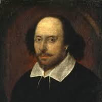
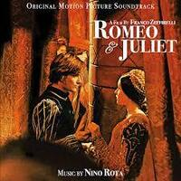
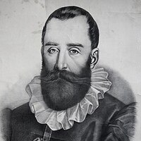
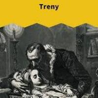

Renesans (XVI wiek)
Barok to epoka pełna kontrastów, emocji i bogatego języka. W literaturze dominowały motywy religijne i refleksja nad życiem.
Autor 1: William Szekspir
William Shakespeare był angielskim dramaturgiem i poetą, uważanym za jednego z najwybitniejszych twórców w historii literatury. Napisał m.in. Hamleta, Romea i Julię oraz Makbeta.

Dzieło: „Romeo i julia”
William Shakespeare napisał Romeo i Julię, historię dwojga zakochanych z wrogich rodzin (Montekich i Kapuletów). Ich miłość kończy się tragedią przez konflikt między rodzinami.

Autor 2: Jan Kochanowski
Jan Kochanowski – polski poeta renesansowy, jeden z najwybitniejszych twórców literatury polskiej.

Dzieło: „Treny”
Treny – cykl 19 utworów poświęconych zmarłej córce Urszulce. Pokazują ból ojca, żałobę i refleksję nad sensem życia oraz cierpienia..
